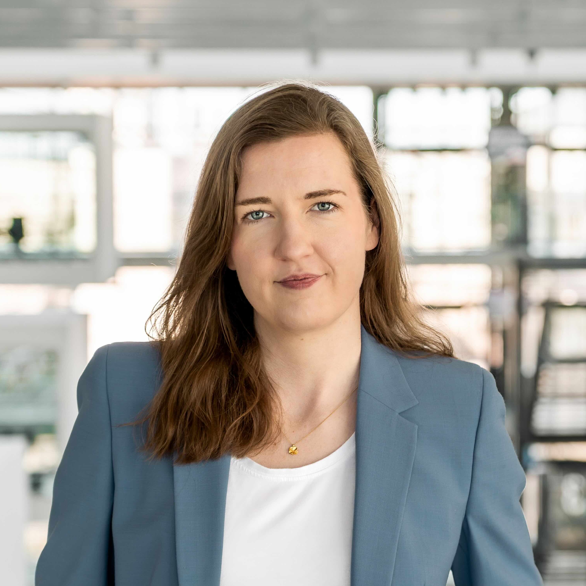

<aside class="sidebar">
    <a href="index.html">
    
    </a>

    <a href="index.html" style="text-decoration: none; color: inherit;"><h2>Laura Weihl</h2></a>
    <p class="role">
    Computer Vision Researcher<br>
    <a href="https://itu.dk" target="_blank">IT University of Copenhagen</a><br>
    <a href="https://www.aicentre.dk/" target="_blank">Pioneer Centre for AI</a>
    </p>

    <ul class="sidebar-links">
    <li><span class="icon">📍</span> Copenhagen, Denmark</li>
    <li><span class="icon">✉️</span><a href="mailto:lawe@itu.dk">lawe@itu.dk</a></li>
    <li><span class="icon">🦋</span><a href="https://bsky.app/profile/lauraweihl.bsky.social" target="_blank">Bluesky</a></li>
    <li><span class="icon">💼</span><a href="https://linkedin.com/in/lauraweihl" target="_blank">LinkedIn</a></li>
    <li><span class="icon">🐙</span><a href="https://github.com/lw112" target="_blank">GitHub</a></li>
    <li><span class="icon">🎓</span><a href="https://scholar.google.com/citations?user=lXoIuMYAAAAJ&hl=en" target="_blank">Scholar</a></li>
    <li><span class="icon">⭐️</span><a href="https://pure.itu.dk/da/persons/laura-weihl/" target="_blank">Pure</a></li>
    <li><span class="icon">🌺</span><a href="https://orcid.org/my-orcid?orcid=0000-0002-8916-3468" target="_blank">Orcid</a></li>
    </ul>
</aside>
